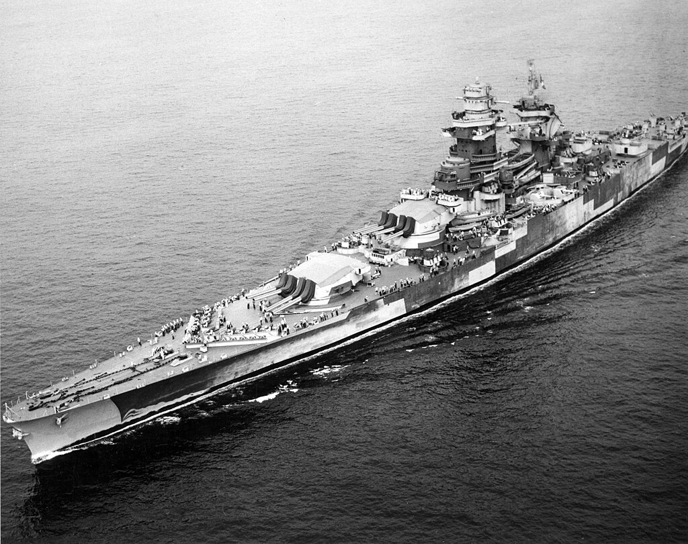
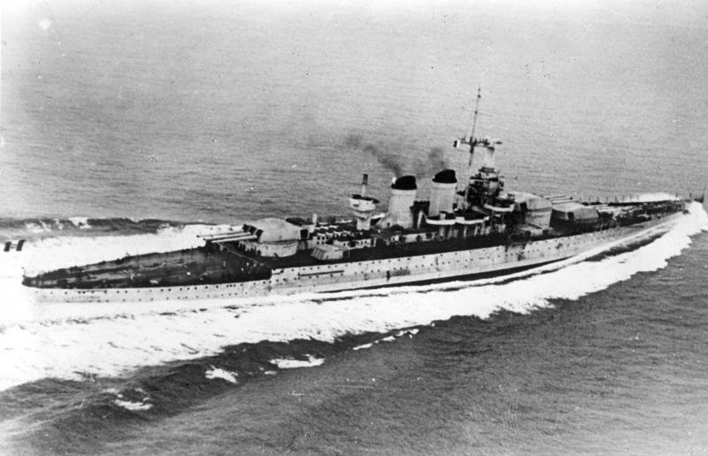
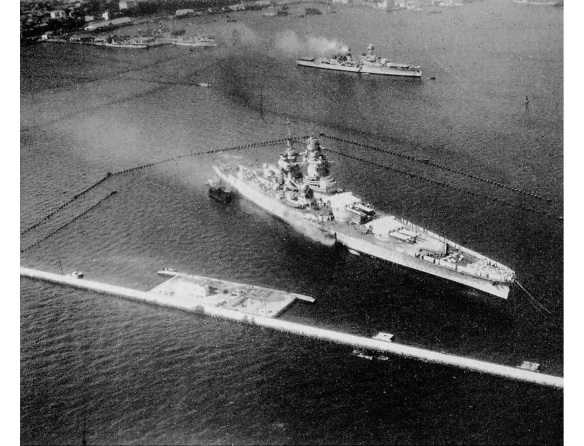
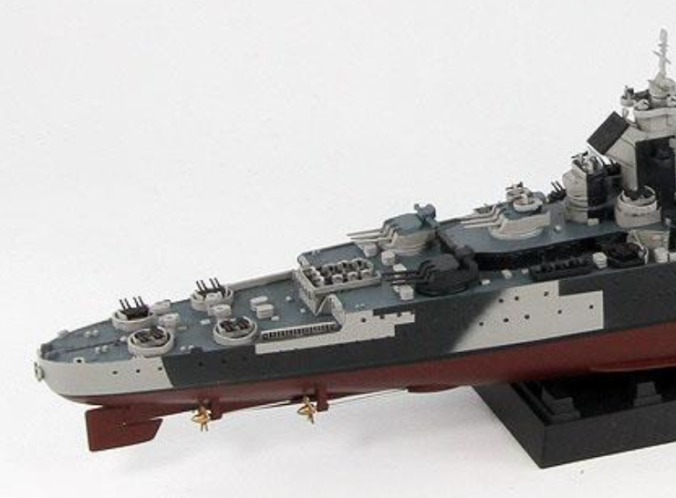
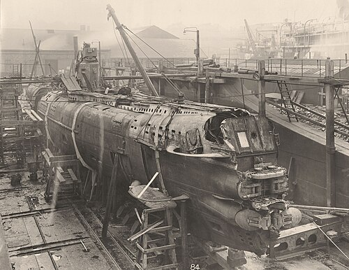
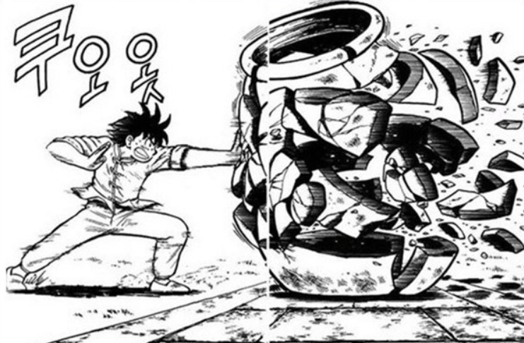

WW2 중 항모에서의 야간 작전 (14) - 세네갈 항구의 소드피쉬
게시: 2025-05-22T06:30:16+09:00
<리셜리외 추기경에게 어뢰를> 기본적으로 수심이 얕은 항구 깊숙한 곳에 들어앉은 전함을 항공 어뢰로 공격하는 전술은 많은 경험을 수 쌓을 수 있는 성질의 것이 아님. 훈련을 해도 어디까지나 가상의 적함을 대상으로 그냥 망망대해에서 할 수 밖에 없음. 특히나 전시에는 더욱 그러함. 전시에는 모든 자원이 부족하므로 아군 전함은 나가 싸우기도 바쁨. 아무리 비활성 훈련용 어뢰라고 해도, 전함이 한가하게 아군 항구에 들어앉아 표적 노릇이나 하고 있을 수는 없음. 게다가 항구 자체도 사용할 수 없음. 전시의 군수품 상하역으로 바쁜 항구에서 '뇌격기 훈련하니까 몇시부터 몇시 사이에 선박 통행을 금지한다' 라고 하는 것도 어려움. 그렇게 아무도 경험이 없는 전술을, 실제 상황과는 크게 다른 환경에서 훈련을 한 조종사들에게 시키면서 단 한 치의 오차도 없이 성공적으로 수행할 것을 기대하는 것은 무리임. 무엇보다, 뇌격기 조종사들이 역량을 120% 발휘하여 얕은 수심에 정박한 적 전함을 향해 완벽한 고도와 속도로 어뢰를 투하한다고 하더라도, 그 어뢰가 과연 적 전함을 파괴할지는 아무도 장담할 수 없었음. 실제와 같은 조건의 항만에서 테스트한 적이 없으니, 훈련한 대로 완벽하게 투하한다고 해도 그 어뢰가 항만 바닥의 진흙에 처박힐 지도 모르고 적 전함 주변에 쳐진 어뢰 방어망에 걸려 무력화될 지도 모르는 일. 그런데 그렇게 성공 가능성이 낮은 임무에 소중한 소드피쉬 뇌격기들과 조종사들을 투입하여 희생시키는 것은 영국해군 수뇌부로서도 매우 부담이 되는 일. 그런데도 1940년 11월, 영국해군 지중해 함대 사령관 커닝햄 제독은 과감히 작전을 지시. 과연 무슨 근거로 그렇게 자신감 있게 행동했을까? 이유는 신무기도 있었고 경험도 있었기 때문. 1940년 7월 이후 영국해군은 당시 프랑스령이던 아프리카 북서부 세네갈의 다카르 항에 대해 두어 차례공격을 수행. 바로 직전까지는 프랑스 해군과 영국해군은 어깨를 나란히 하던 전우였으나 프랑스가 항복하고 비시 정부가 들어서면서 어제의 전우가 오늘의 적이 되었기 때문. 다카르항의 프랑스 해군 전력 중 반드시 제거해야 할 대상은 거기에 있던 유일한 전함인 Richelieu (4만4천톤, 32노트). 리셜리외는 아직 건조 중인 전함으로서 브레스트 해군창에서 95% 완공된 상태였는데, 독일군이 진격해오자 다카르로 피신시켰던 것.

(15인치 주포 8문이 모두 전면을 향한 4연장 포탑 2기에 설치된 것이 특징인 리셜리외. 다만 이 사진은 연합군 측으로 넘어온 뒤에 미국으로 가서 개보수를 마친 뒤인 1943년의 모습. 전통적으로 영국해군에 비해 프랑스 해군이 딸리는 것은 부정할 수 없지만 배 자체는 프랑스가 언제나 더 멋지고 아름다운 배를 만드는 것도 18세기 이래 계속된 전통임. 나폴레옹 시절에도 영국해군은 프랑스 해군으로부터 나포한 군함들을 자국산 군함보다 더 높게 평가하며 영국해군에 취역시켰음.) 다카르 항구의 수심은 12.7 미터로서, 타란토 항구의 전함 계류장의 수심 15 미터보다도 더 얕았음. 리셜리외는 당시 타란토 항구에 있던 이탈리아 전함 Littorio (4만5천톤, 30노트)와 비슷한 체급으로서 만재 흘수(draft, 수면에서 뱃바닥까지의 깊이)가 9.9 미터에 달했음. 참고로 리토리오의 만재 흘수는 9.6 미터.

(이탈리아 전함 Littorio) 혹시 다카르 항구의 리셜리외 주변에도 어뢰 방어망이 설치되어 있었을까? 자세한 전투 기록은 못 찾았으나 있었던 것으로 보임. 아래 사진처럼 1940년 다카르 항구에 정박한 리셜리외 주변에 지역방어식으로 설치된 부표식 어뢰 방어망이 보이기 때문.

(1940년 다카르 항구에 정박한 리셜리외의 모습. 주변에 부표들에 의해 고정된 어뢰 방어망이 보임. 저 뒤에 보이는 경순양함은 몽캄(Montcalm) 호로 추정.) 다카르 항에 대한 공격은 9월 하순에 이루어졌으나, 그 전인 7월에도 영국의 경항모인 HMS Hermes가 6기의 소드피쉬 뇌격기를 새벽 4시 15분에 이륙시켜 다카르 항에 정박한 리셜리외에 대한 공격을 수행. 여명을 이용한 이 공격에서 리셜리외는 우현에 어뢰를 1방 얻어맞고 우현측 2개의 스크루축 사이에 커다란 구멍이 뚫렸고, 침몰된 것은 아니지만 사실상 항행 불능 상태에 빠짐. 그렇게 얕은 수심에 어뢰 방어망의 보호까지 받던 리셜리외를 소드피쉬들은 어떻게 어뢰로 공격한 것일까?

(저 두개의 우현 스크루축 사이에 구멍이 뚫렸다는 것은...)
<통배권(通背拳)을 쓰는 어뢰> 실은 소드피쉬를 출격시킨 영국해군 지휘부도 뭘 어찌 해야 할 지 잘 모르는 상태에서 일단 던져본 것에 불과. 이렇게 일단 던지기라도 하게 된 것은 영국해군에 신무기가 하나 생겼기 때문. 바로 Duplex pistol. 이건 듀플렉스라는 이름의 권총이 아니라 어뢰의 이중 격발 장치를 뜻하는 것. 보통 온갖 흉악한 신무기는 모두 영국놈들이 만든 것이지만, 의외로 그 신무기의 오리지널 발명자는 독일. WW1가 거의 끝나가던 1918년 7월, 영국 해군 구축함 HMS Garry는 독일 U-boat UB-110를 영국 근해에서 격침시킴. 격침된 UB-110은 WW1 종전 1달 전인 10월에야 인양되었는데, 이 유보트를 조사해본 영국해군은 충격을 받게 됨. 당시 어뢰들은 당연히 돌진하다 적함 측면에 부딪히면 그 머리 부분의 충격 신관이 작동하면서 폭발하는 것. 그런데 이 유보트에 탑재된 어뢰에는 접촉식 충격 신관(contact pistol)이 아닌, 자석을 이용한 자성 신관(magnetic pistol)이 설치되어 있었음. 알고보니 독일도 오래전부터 이걸 사용했던 것은 아니고 1917년부터야 개발했던 것.

(1918년 영국 Swan Hunter 드라이독에서 수리 및 조사 중인 UB-110. 참고로 이걸 격침한 영국 구축함 HMS Garry의 함장은 1912년 빙산과 충돌하여 침몰한 타이타닉의 생존자였다고. 또 이 UB-110은 WW1 중 마지막으로 격침된 U-boat였음.) 충격 신관과 비교할 때 자성 신관의 장점은 어뢰가 꼭 적함에 명중하지 않고 아슬아슬하게 빗나갈 때도 폭발하여 적함에게 큰 피해를 줄 수 있고, 또 심도를 잘 조절하면 어뢰가 적함의 함체 측면이 아니라 적함 아래 부분에서 폭발시킬 수 있다는 것. 그러면 적함의 용골(keel)을 부러뜨릴 수 있으므로 단 한 발의 어뢰로도 순양함 정도는 그냥 두 동강을 내버릴 수도 있었던 것. 이거야 말로 외상을 줄 뿐인 평범한 주먹질이 아니라 발경을 이용하여 적의 내부 장기를 부서버리는 통배권(通背拳)을 쓰는 어뢰라고 할 수 있었음.

(추억의 명작 만화 용소야에 나오는 통배권. 어릴 때 이거 연습해봤으면 아재라는데 나는 대학생 때 군대 제대한 이후에 이거 해봤음. 아재라도 동심은 항상 있음.) 그러나 길거리 싸움이든 UFC 종합 격투기이든 통배권을 쓰는 사람은 없음. 이유는 통배권에서 말하는 발경이라는 것이 진짜 실존하는 것인지 여부를 떠나, 발경을 하려고 기를 모으고 어쩌고 하는 동안 상대방의 주먹질에 이빨이 부러지고 턱이 돌아가기 때문. 마찬가지로 저 마그네틱 피스톨을 이용한 어뢰 격발에도 문제가 있었음. (또 분량 조절 실패로 다음 주에 계속)